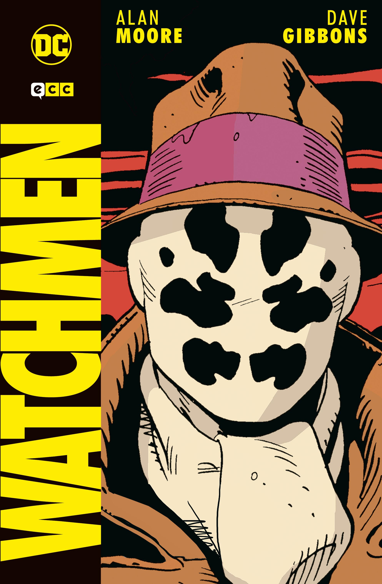
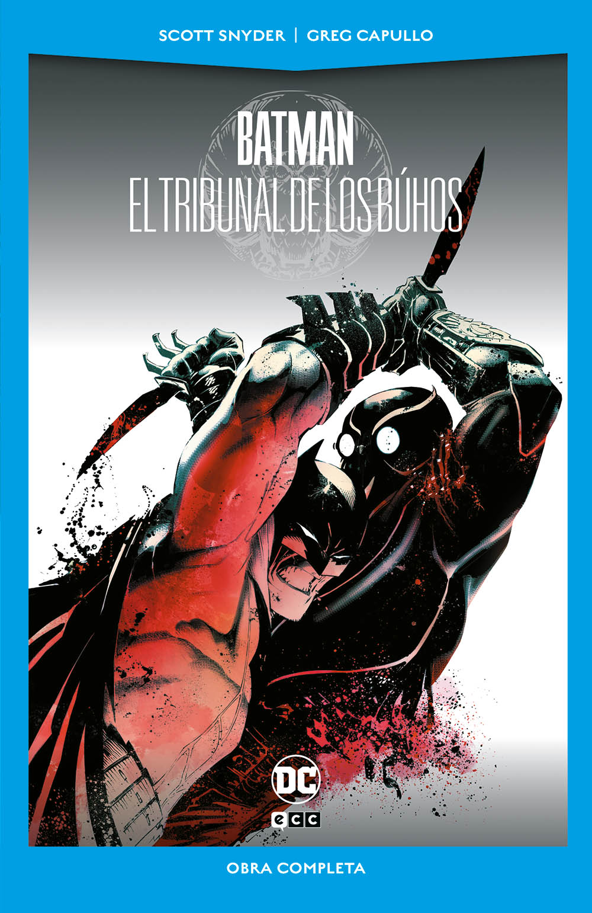

FINALIZADOS
| Título | Autor | Año publicación | Portada | Resumen |
|---|---|---|---|---|
| Watchmen | Guionista Alan Moore, dibujante Dave Gibbons y entintador John Higgins. | 1986 |  | Asesinan al Comediante y Rorschach investiga el crimen. El buho nocturno y espectro de seda se lian y Dr. Manhattan recibe una trampa. Tras mucho investigar, Rorschach y Buho nocturno descubren que el hombre más inteligente de la tierra (Adrian Veidt, Ozymandias) es el que está detrás de todo. Su objetivo es la paz mundial a través de exterminar a media Nueva York. Ozymandias es el asesino del Comediante. |
| Batman El tribunal de los búhos | Guionista Scott Snyder, dibujante Greg Capullo | 2012 |  | Hay un asesinato en Gotham y Batman trata de resolverlo. Aparece un asesino llamado "La Garra" perteneciente al tribunal de los búhos, una antigua sociedad secreta de la ciudad. La Garra dice ser Thomas Wayne Jr. hermano de Bruce Wayne que fue dado en adopción cuando nació. Batman lo derrota. |
| Titulo 3 | 3 |